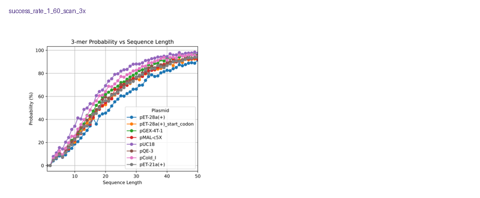

HURDLER figure validation
All canonical figures have non-empty PDF and PNG pairs.
Figure
Source
Pixels
Status
success_rate_1_60_scan_3x
notebooks/tasks/02_success_rate_1_60.ipynb
3600 x 3000
passed
Contact sheet
